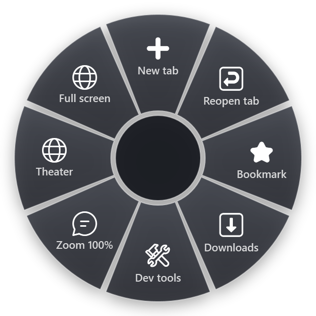

Chrome shortcuts pass through more hands than most: Windows, other programs, Chrome itself, its extensions and the web page you are on. Any of them can take a key. The good news is that each one is easy to rule out. Here are the causes in the order they usually turn up.
First, test on a blank tab
Press Ctrl+T for a new tab and try the shortcut there. A new tab has no web page that could use the keys.
- It works on a new tab but not on a certain site: the page uses the key itself (section 1).
- It fails everywhere in Chrome: look at extensions, the layout and other programs (sections 2 to 5).
- One shortcut never worked on this computer: look at policies (section 6).
1. The web page uses the key
Web apps such as mail, document editors, chat and video sites have their own keyboard shortcuts, and while you are in them, they handle many keys first. A text field also takes letters and some combinations while the cursor is in it.
Check: click on an empty part of the page, outside any text field, and try again. If the shortcut only fails on one site, look for that site's keyboard shortcut settings; many web apps let you turn their shortcuts off.
2. An extension took the key or set its own
Extensions can have keyboard shortcuts, and some also watch keys on every page you open.
Check the shortcuts: open chrome://extensions/shortcuts in the address bar. You see every extension shortcut and whether it works only in Chrome or everywhere in Windows (Global). Change or clear the ones you do not need.
According to Chrome's documentation, shortcuts of the operating system and of Chrome itself take priority over extension shortcuts. So if an extension shortcut does nothing, it may be set to a key that Chrome or Windows already uses. Pick another.
Check page-level extensions: open an Incognito window with Ctrl+Shift+N. Extensions are off there unless you allowed them. If the shortcut works in Incognito, an extension is the cause. Turn extensions off one at a time in chrome://extensions to find it.
3. The keyboard layout, AltGr and the layout hotkey
Windows can keep several keyboard layouts and switch them with Win+Space or Alt+Shift. Two layout effects reach Chrome:
- Ctrl+Alt is AltGr on many European layouts, which type extra characters with it. Chrome's developer documentation does not allow Ctrl+Alt for extension shortcuts for exactly this reason. If a site or a tool gives you a Ctrl+Alt shortcut, it may type a character on your layout instead.
- The layout hotkey can be Ctrl+Shift. In Settings > Time & language > Typing > Advanced keyboard settings > Input language hot keys, Windows can switch layouts with Ctrl+Shift. Chrome has many Ctrl+Shift shortcuts: Ctrl+Shift+T reopens a closed tab, Ctrl+Shift+N opens Incognito, Ctrl+Shift+B shows the bookmarks bar. Change the hotkey to Left Alt+Shift, or turn it off and use Win+Space.
Check: look at the language indicator next to the clock. If shortcuts failed right after a layout change, switch back and test.
4. Function keys and Fn Lock
F5 reloads, F6 moves between the address bar and the page, F11 toggles full screen and F12 opens developer tools. On most laptops the top row does brightness and volume first. Hold Fn with the key, or turn on Fn Lock (on many keyboards Fn+Esc). Many Chrome shortcuts also have a Ctrl version that avoids the F-keys: Ctrl+R reloads, Ctrl+L goes to the address bar, Ctrl+Shift+I opens developer tools.
5. Another program took the key
Programs can register shortcuts for all of Windows: screen recorders, clipboard managers, graphics driver panels, translation tools, chat apps. A global extension shortcut from another Chromium browser running in the background counts too. Those keys never reach Chrome.
Check: close tray programs and other browsers one at a time and test after each.
6. Your organization manages Chrome
On a work computer, Chrome may be managed by policies. Policies can turn off Incognito mode or developer tools, and then Ctrl+Shift+N or F12 does nothing at all.
Check: open chrome://management. If Chrome is managed, the page says so. Open chrome://policy to see the policies that apply. You cannot change these yourself; ask your IT department.
7. Settings that went wrong
When none of the above explains it, reset Chrome's settings: go to Settings > Reset settings > Restore settings to their original defaults and confirm. Chrome's help describes what this resets: your startup page, new tab page, search engine and pinned tabs, it turns off extensions and clears temporary data such as cookies. Bookmarks, history and saved passwords stay. Turn the extensions you need back on afterwards, one at a time, which also shows you if one of them was the cause.
Where a radial menu helps, and where it does not
RadialDeck is the radial menu for Windows that we make. When Chrome is in front, the same hotkey opens a browser ring. The gallery's Chrome actions are Incognito, Address bar, History, Bookmarks bar, Clear browsing data and Task manager, each sending the Chrome shortcut, and you can add more from the browser category.

Precisely what it can and cannot do:
- It sends the same keys you would, to the window that was in front when you opened the ring. If a web page, an extension, the layout hotkey or a policy blocks a shortcut, it blocks the slice too. Run the tests above first.
- It helps with the shortcuts you rarely use: Shift+Esc for Chrome's task manager or Ctrl+Shift+Delete for Clear browsing data are easy to forget. On the ring they have names.
- It helps with the F-key row: on most laptops Fn Lock is handled inside the keyboard itself, so a slice you set to send F12 sends F12, whatever the top row is set to.
All Chrome actions are on the Chrome page.
Quick checklist
- Try the shortcut on a new tab (Ctrl+T).
- Check
chrome://extensions/shortcuts; test in Incognito. - Check the language indicator and the Input language hot keys.
- Fn or Fn Lock, or the Ctrl version of the shortcut.
- Close tray tools and other browsers.
- On a work computer, open
chrome://management. - Reset settings as a last step.
RadialDeck is free for two rings and has a 14-day trial of Pro, which adds a ring per program such as the Chrome ring. It is in the Microsoft Store.
Try it in RadialDeck
Free for two rings, with a 14-day trial of everything in Pro. Windows 10 and 11, from the Microsoft Store.